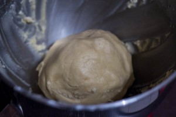
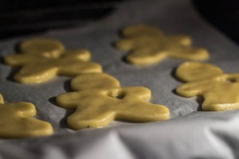

Sablés de Noël

Aujourd’hui je partage avec vous ma recette de sablés de Noël qui sont ultra (vraiment ultra) fondants, fourrés à la confiture et idéals à préparer pendant la période des fêtes qui approche à grand pas.
Tadam dans quelques jours à peine c’est bientôt Noël (je vous l’ai déjà dit mais je suis une dingue de Noël)!! Chocolats, biscuits, bûche, sapin, sablés de Noël, bredele, cannelle et pains d’épices… vont venir nous tenir compagnie le temps d’un (ou plusieurs) repas et j’en suis vraiment trop heureuse! Pour l’occasion, j’ai décidé de vous livrer ma recette fétiche de sablés de Noël (ou du moins ma recette de sablés tout court car c’est ma recette de base lorsque je fais des sablés, Noël ou pas Noël)! Honnêtement, avant cette recette je n’étais pas fan du tout de ces petits biscuits que je trouve en général beaucoup trop secs mais maintenant avec cette recette (que j’ai fait plusieurs fois avant d’arriver à ce parfait équilibre) je les adore!!
Je pense que beaucoup d’entre vous sont en ce moment en train de préparer des bredeles et autres douceurs de Noël et je pense que mes petits bonhommes pourront certainement convenir pour être préparés et dévorés à Noël (et inutile de vous dire que cette recette est vraiment parfaite pour occuper vos enfants pendant les vacances)! Pour ceux qui n’ont jamais entendu le mot « bredeles », il s’agit tout simplement de petits biscuits confectionnés spécialement pour les fêtes de fin d’années. Tout droit venue d’Alsace cette « tradition » ne cesse de perdurer depuis au moins le 16ème siècle et c’est tellement bon qu’on ne veut pas s’en passer 🙂
A l’occasion des fêtes un peu plus d’amour est vraiment bienvenu alors j’ai décidé de vous faire des petits sablés de Noël en forme de « bonhommes d’hiver amoureux »(et oui vous avez forcément reconnu Mr Pain d’épices emmitouflé dans sa grosse écharpe à l’occasion des fêtes de fin d’année)!
J’ai choisi de fourrer mes petits sablés de Noël à la confiture d’abricot-praline rose que la maison Malartre nous a très gentiment offerte lors de ma journée à Lyon (article ici) mais évidemment vous pouvez choisir de les fourrer à n’importe quel autre parfum ou encore avec de la gelée c’est tout aussi bon.
Je vous laisse maintenant découvrir la recette de mes sablés de Noël et j’espère qu’elle vous plaira!
Ingrédients
- Beurre mou - 250g
- Sucre - 100g
- Maïzena - 60g
- Farine - 350g
- Oeuf - 1
- Levure chimique - 1càc
- Extrait de vanille - 1càc
- Confiture
- Sucre glace
- Pâte à sucre
Instructions
- Mélanger le beurre en pommade avec le sucre jusqu'à obtenir un mélange crémeux
- Ajouter l’œuf et continuer de mélanger
- Verser l'extrait de vanille
- Mélanger la maïzena avec la levure à part
- Petit à petit verser la maïzena-levure
- Mélanger pour obtenir un mélange homogène
- A ce stade on a une boule lisse de "beurre" plutôt luisante
- Ajouter la farine petit à petit (50g par 50g par exemple) afin de bien l'incorporer à la pâte
- Une fois la boule de pâte prête, enroulez la dans du cellophane et placez la au frais pendant 30 min
- A la sortie du frigo, couper la pâte en 3 ou 4 morceaux
- Étaler la pâte au rouleau (environ 2mm d'épaisseur)
- A l'aide d'emporte-pièces créer vos formes. Il faudra un sablé "plein" et un troué qui se superposeront plus tard l'un sur l'autre
- Poser les sablés sur du papier sulfurisé sur une plaque à pâtisserie (recommencer avec les chutes de pâte)
- Préchauffer le four à 175°
- Enfourner pour 8 à 10 min (attention à bien surveiller la cuisson car ça peut vraiment varier d'un four à l'autre) Il faut que les sablés dorent très légèrement
- Laisser les biscuits refroidir
- Étaler de la confiture sur le sablé "plein" et recouvrez le du sablé troué
- Saupoudrer de sucre glace


Les tips de la communauté
Tous les lecteurs trouvent ces sablés adorables et mignons. Les retours confirment qu'ils sont très moelleux. L'auteure a clarifié comment décorer avec la pâte à sucre et résolu des problèmes de fragilité.
Astuces
- Respecter le temps de repos de la pâte pour obtenir la bonne texture
- Prolonger légèrement la cuisson pour réduire la fragilité et augmenter la moelleux
- Utiliser de la pâte à sucre de couleur pour la décoration (yeux, bouches, écharpes)
- Les sablés sont très moelleux donc plus cassants que les sablés secs classiques
- Préparer 2-3 jours avant pour conserver le fondant optimal
Ajustements signalés
- Les sablés ne doivent pas être très très fragiles - améliorer la cuisson et le repos de la pâte
- Cuire plus longtemps pour équilibrer fragilité et moelleux